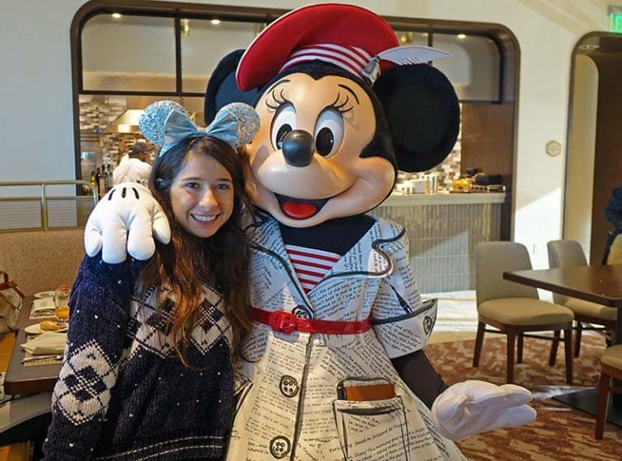
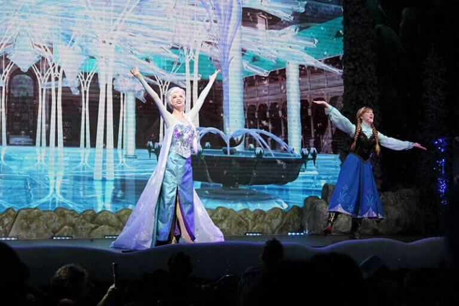
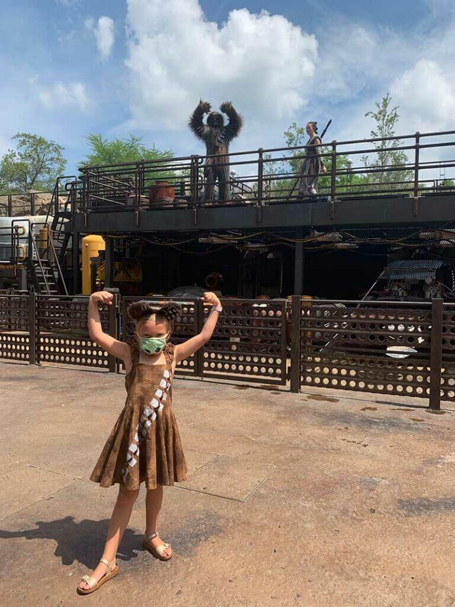

|
DISNEY HOLIDAY HYPE |
DISNEY WORLD family vacation experts

Explore;Dream;Discover.
DISNEY WORLD AVAILABLE PLACES
- MAGIC KINGDOM
- EPCOT
- DISNEY'S HOLLYWOOD STUDIO
- ANIMAL KINGDOM
- WATER PARKS
- MINIATURE GOLF COURSES
- ESPN SPORTS ZONE
Types of Disney world characters

|
At the Disney World theme parks and resorts, you’ll find
two types of characters: face characters and fur characters.
Face characters take on a fully-human form and look like real people,
complete with wigs and makeup, while fur characters have a
mascot-style costume with oversized heads. Face characters include
all of the Disney princesses and princes, as well as live-action
characters including Jack Sparrow and Mary Poppins — just to name a few.
Fur characters are typically animal or nonhuman characters, such as
Disney’s Fab Five, the Toy Story gang and Chewbacca.
But there are some "human" fur characters, most notably the Incredible
family and Carl and Russell from "Up." Pretty self-explanatory, right?
|
Traditional Meet-and-Greets with Disney world characters

|
The traditional meet-and-greet is by far the most personal way to
interact with Disney World characters. Even though it only lasts for a few moments,
the character has all of their attention on you.Plus, you get the best photo-op
whether you use your own camera or the Disney PhotoPass service. Since you’ll be
taking lots of pictures, get creative with poses. Pretend you’re surfing with Stitch or
shooting an arrow with Merida. With the new indoor character sightings, guests can get
personalized interactions again.Even though there is distance, the characters do a great
job of having those individual conversations. Remember that masks are currently required
indoors and must stay on at all times, even for photos.
|
Disney characters at Magic kingdom

|
Current indoor character sightings:
Mickey Mouse at Town Square Theater (in his new EARidescent outfit)
Cinderella and Elena at Princess Fairytale Hall
Rapunzel and Tiana at Princess Fairytale Hall
Character cavalcades:
The Royal Princess Processional: Merida, Rapunzel, Tiana, Aurora, Ariel, Belle, Elena,
Jasmine, Mulan, Snow White, Cinderella and the Fairy Godmother
Mickey & Friends 50th Celebration Cavalcade: Mickey, Minnie, Pluto, Goofy, Donald,
Daisy, Chip, Dale and parade dancers
Magic Kingdom Cavalcade: Gaston, Moana, Alice in Wonderland, Peter Pan, Aladdin and Mary Poppins
Disney Friends Cavalcade: Max, Clarabelle Cow, Stitch, José Carioca, Panchito and parade dancers
Tinker Bell & the Lost Treasure: Tinker Bell
Traditional character greetings (currently unavailable):
Ariel at Ariel’s Grotto
Aladdin and Jasmine in Adventureland
Mary Poppins at Liberty Square Gazebo
Minnie, Goofy and Donald Duck at Pete's Silly Side Show
Merida at Fairytale Garden
Buzz Lightyear in Tomorrowland
|
Disney characters at Animal kingdom

|
Character flotillas:
Timon and Rafiki
Pocahontas with John Smith or Meeko
Donald, Daisy, Launchpad McQuack
Goofy and Chip 'n' Dale
Mickey, Minnie and Pluto
Traditional character greetings (currently unavailable):
Mickey and Minnie (in safari gear) at Adventurers Outpost
Chip ‘n' Dale at DinoLand
Donald Duck at DinoLand
Goofy at DinoLand
Pluto at DinoLand
Launchpad McQuack at DinoLand
Scrooge McDuck at DinoLand
Rafiki and Timon at Character Landing on Discovery Island
|
Disney characters at Epcot

|
Random outdoor character sightings:
Elsa or Anna in Norway
Snow White in Germany
Jasmine in Morocco
Mulan in China
Belle or Aurora in France
Alice in Wonderland and Mary Poppins in the United Kingdom
Joy or Winnie the Pooh near Journey into the Imagination with Figment
Mickey and friends near Spaceship Earth.
Traditional character greetings (currently unavailable):
Donald Duck in Mexico
Vanellope and Ralph at ImageWorks
|
Disney characters at Hollywood Studio

|
Character sightings (coming in November):
Minnie Mouse at Red Carpet Dreams
Disney Junior Pals at Animation Courtyard
Random outdoor character sightings:
One or two of Mickey and friends will appear on a balcony near Oscar's Super Service
One or two of Mickey and friends will appear in the grass area near The Hollywood Brown Derby
(we've seen Chip 'n' Dale having a picnic and Pluto playing with a bone)
Max or Goofy will appear by Echo Lake
Kylo Ren and Stormtroopers near First Order Cargo
Rey, Chewbacca and Vi Moradi across from Droid Depot
Character motorcades:
Mickey & Friends Motorcade: Mickey, Minnie, Donald Duck, Daisy, Pluto and Chip 'n' Dale
Pixar Motorcade: Mr. Incredible, Elastigirl, Edna Mode, Sulley, Green Army Soldiers, Woody, Jessie and Buzz Lightyear
|
Dining with Disney World Characters
|  |
For a large selection of characters in one stop, it’s worth considering a character dining experience.
These meals offer you a slight time advantage. Why wait 45 minutes for
one character when the same amount of time at a character meal could get you multiple greeting opportunities?
Plus you have mealtime covered, and for some spots, you don’t even have to leave your resort if you’re staying on-site!
The downside is the price tag, which is definitely more than counter-service dining.
Your time with the characters is also limited. With 40+ tables to cover, they can't linger with you for too long.
Some character dining locations are not currently offering characters, while others have distanced ones.
|
Shows of Disney World Characters
|  |
For the First Time in Forever: A Frozen Sing-Along Celebration at Disney's Hollywood
Studios —It’s time to belt out "Let It Go!" The Royal Historians of Arendelle recount the story of their
kingdom with a little bit of help from Anna, Kristoff and Elsa. (Even Olaf makes a special
appearance during the holiday season!)
Beauty and the Beast — Live on Stage also at Disney's Hollywood Studios takes you through a tale as old as time.
This Broadway-style show takes you through Belle's iconic story, with plenty of musical fun!
Although the show is marked a little differently now due to social distancing, we are so hoppy to see this musical again.
|
Tips to interact with Disney Characters
|  |
It can be tempting to leap at the first sign of a Disney character your little one needs to see.
Many people will stop and see the characters when they first pass by earlier in the day, causing long lines.
For those characters who have all-day meeting times (i.e. Mickey Mouse and the princesses at Magic Kingdom),
consider waiting until later in the afternoon or evening. By waiting until later, fewer people are passing
these areas for the first time and are more apt to carry on with their magical day.If there’s a character
you want to see and you know where the meeting place and time will be, line up before the character arrives.
Nothing draws a crowd (and a line) at Disney like a character. Arriving a few minutes early and hanging around or
waiting in line before the character appears can save you time later. This worked well for us when we met Alice at the United
Kingdom pavilion in EPCOT. The fact that Mary Poppins was still out nearby helped to further draw people away from the Alice meeting spot.
|